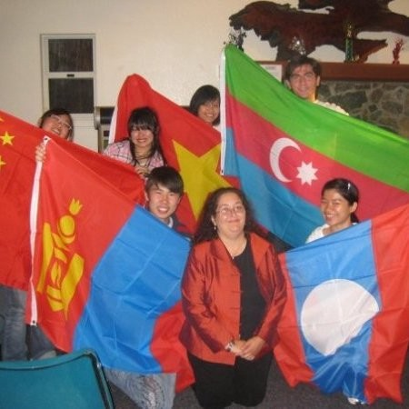

<div class="section" id="reference">
  <div class="container cc-reference">
    <div class="h4 mb-4 text-center title">References</div>
    <div class="card" data-aos="zoom-in">
<<<<<<< HEAD
      <div>
        <div class="cc-item" *ngFor="let reference of references">
          <div class="row">
            <div class="col-lg-2 col-md-3 cc-reference-header">
              
            </div>
            <div class="col-lg-10 col-md-9">
              <div *ngFor="let des of reference.desc">
                <p>{{ des }}</p>
=======
      <div class="carousel slide" id="cc-Indicators" data-ride="carousel">
        <ol class="carousel-indicators" style="bottom: -25px !important">
          <li
            class="active"
            data-target="#cc-Indicators"
            data-slide-to="0"
          ></li>
          <li data-target="#cc-Indicators" data-slide-to="1"></li>
          <li data-target="#cc-Indicators" data-slide-to="2"></li>
          <li data-target="#cc-Indicators" data-slide-to="3"></li>
          <li data-target="#cc-Indicators" data-slide-to="4"></li>
        </ol>
        <div class="carousel-inner">
          <div class="carousel-item active">
            <div class="row">
              <div class="col-lg-2 col-md-3 cc-reference-header">
                
              </div>
              <div class="col-lg-10 col-md-9">
                <p>
                  During the 2020-2021 academic year, Shree also took two
                  400-level courses in Combinatorics with me. In both courses
                  Shree earned a final grade of 95% (class averages of 87% and
                  82%). Shree’s performance is especially impressive considering
                  that he took the prerequisite course for Combinatorics 1
                  simultaneously, rather than before the course. Still, he
                  demonstrated persistence, attention to detail, and proficiency
                  with concepts throughout the course, outperforming many
                  students who had taken the prerequisite course in a previous
                  semester. In addition to his excellence in academics, Shree is
                  highly engaged with extracurricular work. He has served as
                  president of the Valparaiso International Students
                  Association, vice president of the Association for Computing
                  Machinery, worked in the university admissions office, and
                  served in Student Senate. His resume tells an even deeper
                  story of both on and off-campus experience. He approaches each
                  of these activities with thoughtfulness for how he can
                  contribute as a leader in ways that benefit others.
                </p>
                <p>
                  In summary, I have no doubt that you will enjoy working with
                  Shree as much as I have. He is detail- oriented, persistent,
                  hard-working, analytical, and mature. His intuition and
                  curiosity are strong. I recommend him to you highly and
                  without reservation.
                </p>

                <div class="h5 mt-1">Dr. Lara Pudwell</div>
                <p class="category">
                  Professor of Mathematics and Statistics, at Valparaiso
                  University
                </p>
              </div>
            </div>
          </div>
          <div class="carousel-item">
            <div class="row">
              <div class="col-lg-2 col-md-3 cc-reference-header">
                
              </div>
              <div class="col-lg-10 col-md-9">
                <p>
                  I have known Shreedhar since he was an applicant to Valparaiso
                  University. When he was the President of the International
                  Student Club, I was an advisor and worked with him in
                  admission. I have always been impressed by how he is so strong
                  at building relationships with outside organizations, faculty,
                  and students worldwide. He is also very well-spoken and has
                  even been featured in videos and participated in a Ted talk.
                </p>

                <p>
                  He is very hardworking and takes advantage of every
                  opportunity presented to him and develops. Anyone would be
                  lucky to hire this innovative thinker and someone who works as
                  hard as Shreedhar.
                </p>

                <div class="h5 mt-1">Marci Fradkin</div>
                <p class="category">
                  Director of Global Partnerships, at Virginia Commonwealth
                  University
                </p>
              </div>
            </div>
          </div>
          <div class="carousel-item">
            <div class="row">
              <div class="col-lg-2 col-md-3 cc-reference-header">
                
              </div>
              <div class="col-lg-10 col-md-9">
                <p>
                  Shree did some awesome work on the Software End of things at
                  Woven. It was a joy seeing him provide updates and feedback on
                  the tech side to the rest of the company in a way we could all
                  understand it regardless of our software background.
                </p>

                <p>
                  Shree brought amazing energy to all of our meetings and he was
                  a pleasure to work with.
                </p>

                <div class="h5 mt-1">Skylar Werneth</div>
                <p class="category">
                  Sales Development Representative, at Stylo
                </p>
              </div>
            </div>
          </div>
          <div class="carousel-item">
            <div class="row">
              <div class="col-lg-2 col-md-3 cc-reference-header">
                
              </div>
              <div class="col-lg-10 col-md-9">
                <p>
                  Let’s start with the basics – in the classroom, Shree was one
                  of the top academic performers of his class, both in my own
                  class and in others. He received a major in both computer
                  science and mathematics. In my class (PDEs), his work was
                  always neat, meticulous, and correct. Each professor learns
                  which students in a class produce work which can be a
                  pseudo-solution-key … that is, work in which, if there’s a
                  discrepancy between your own solutions and his, you’d better
                  double check to be sure your own is correct. Shree was one
                  such student. But lots of people do very well in classes, so
                  what else is there? I also got to watch Shree struggle, and
                  ultimately succeed, with handling a very difficult situation
                  in trying to arrange a semester abroad for study at Cambridge.
                  He had to learn way more than any undergraduate should ever
                  need to about bureaucracy, and how to fight his way through
                  it. Because of his visa status, he had to juggle (sometimes
                  contradictory) information from the US government visa offices
                  and our own Department of International Programs to ultimately
                  secure a visa which would allow him to change locations from
                  the US to Great Britain for a semester of study, all while the
                  clock was ticking on the start date for the semester in
                  Cambridge, and while the semester at Valpo had already started
                  – meaning, if his plans to attend Cambdige fell through, he
                  would be behind at VU. It was an extremely frustrating and
                  uncertain experience for him, but he stuck with it and got it
                  all done just in time. I’m sure he will have some stories to
                  tell about this experience.
                </p>

                <p>
                  Overall, I have every confidence Shree has developed into a
                  young professional with significant potential to succeed in
                  technical and computer related work. He will make an excellent
                  addition to your teams, and I imagine he will perform above
                  expectations. I heartily recommend Shree Pandey for any
                  position he is eligible for.
                </p>

                <div class="h5 mt-1">Dr. Ken Luther</div>
                <p class="category">
                  Professor of Mathematics, at Valparaiso University
                </p>
              </div>
            </div>
          </div>
          <div class="carousel-item">
            <div class="row">
              <div class="col-lg-2 col-md-3 cc-reference-header">
                
              </div>
              <div class="col-lg-10 col-md-9">
                <p>
                  One thing that has always stuck out to me about Shree is his
                  ability to make himself become, and then stay, comfortable in
                  any situation or environment. When he was having difficulty
                  finding his way, he was not afraid to make me aware and share
                  his concerns. Shree stepped out of his comfort zone coming to
                  the United States for college alone. In our office, Shree was
                  expected to communicate and find commonalities with, almost
                  exclusively, high school students from the U.S. who had
                  totally different experiences than him. Shree came to me one
                  time to discuss struggles while making phone calls to
                  students. He took kindly to advice and encouragement, found a
                  way to be effective in his work while still meeting
                  expectations, and succeeded in his role. Shree’s work ethic is
                  one of his best qualities.
                </p>

                <p>
                  Shree always represented Valparaiso University positively, and
                  was looked up to by his teammates, because of his calm
                  demeanor, his ability to adapt to each and every family, and
                  his wide range of experience as a student and in our office. I
                  believe Shree’s experience in our office has prepared him well
                  to be successful in any team environment.
                </p>

                <div class="h5 mt-1">Mike Targonski</div>
                <p class="category">
                  Director of Admission Visits and Events, at Valparaiso
                  University
                </p>
>>>>>>> 37a09092944b87f28205dd3f074eb1d5bd514cbe
              </div>
              <div class="h5 mt-1">{{ reference.name }}</div>
              <p class="category">
                {{ reference.title }}
              </p>
            </div>
          </div>
        </div>
      </div>
    </div>
  </div>
</div>
